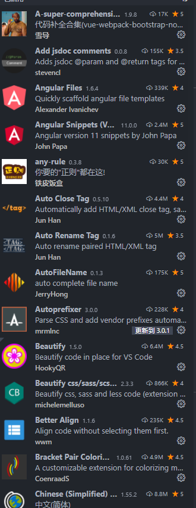

名称: Bracket Pair Colorizer ID: coenraads.bracket-pair-colorizer 说明: A customizable extension for colorizing matching brackets 版本: 1.0.61 发布者: CoenraadS VS Marketplace 链接: https://marketplace.visualstudio.com/items?itemName=CoenraadS.bracket-pair-colorizer
名称: Codelf ID: unbug.codelf 说明: Best GitHub stars, repositories tagger and organizer. Search Github, GitLab to find real-world usage variable names. 版本: 11.7.0 发布者: unbug VS Marketplace 链接: https://marketplace.visualstudio.com/items?itemName=unbug.codelf
名称: Color Highlight ID: naumovs.color-highlight 说明: Highlight web colors in your editor 版本: 2.3.0 发布者: Sergii Naumov VS Marketplace 链接: https://marketplace.visualstudio.com/items?itemName=naumovs.color-highlight
名称: Image preview ID: kisstkondoros.vscode-gutter-preview 说明: Shows image preview in the gutter and on hover 版本: 0.27.1 发布者: Kiss Tamás VS Marketplace 链接: https://marketplace.visualstudio.com/items?itemName=kisstkondoros.vscode-gutter-preview
名称: Rainbow Brackets ID: 2gua.rainbow-brackets 说明: A rainbow brackets extension for VS Code. 版本: 0.0.6 发布者: 2gua VS Marketplace 链接: https://marketplace.visualstudio.com/items?itemName=2gua.rainbow-brackets
名称: VSCode Great Icons ID: emmanuelbeziat.vscode-great-icons 说明: A big pack of icons (100+) for your files. 版本: 2.1.73 发布者: Emmanuel Béziat VS Marketplace 链接: https://marketplace.visualstudio.com/items?itemName=emmanuelbeziat.vscode-great-icons
